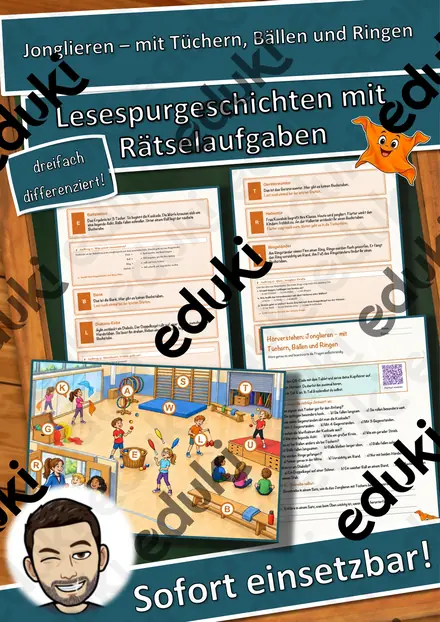
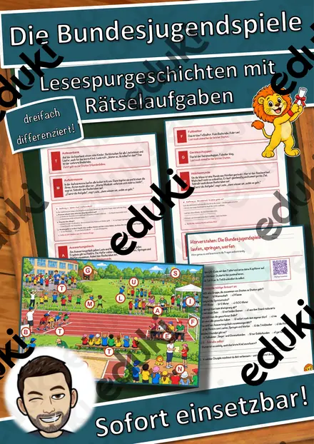
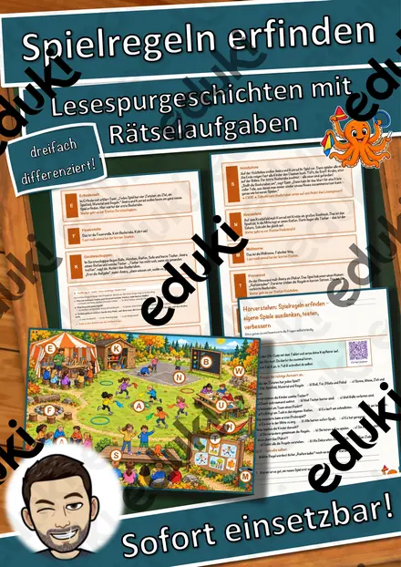
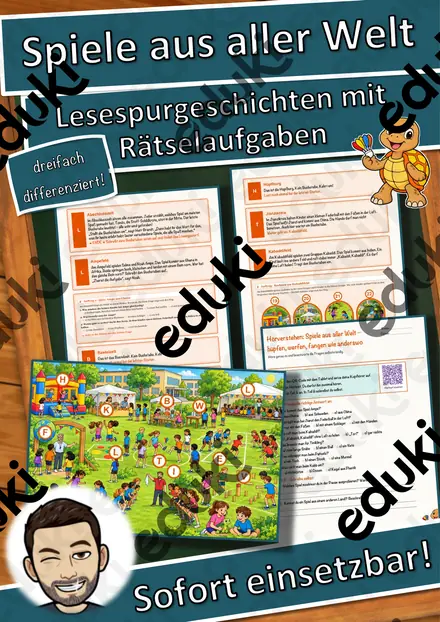
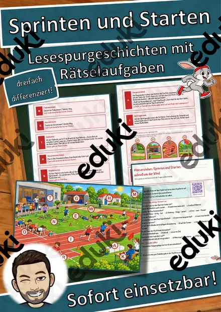
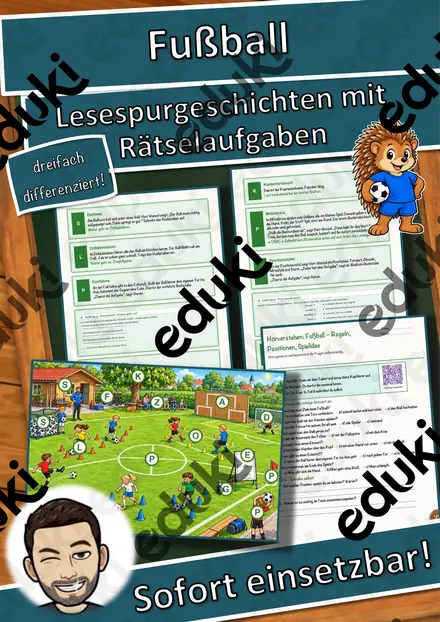
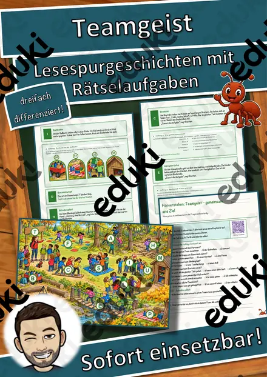
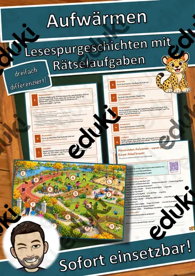

Werfen – Schlagball, Weitwurf und Zielwurf – Lesespurgeschichte mit Rätselaufgaben (Klasse 3)
Werfen – Schlagball, Weitwurf und Zielwurf – Lesespurgeschichte Sport (Klasse 3/4)Schick deine Klasse auf eine Lesespur über die Vereinswiese! „Wer wirft am weitesten?“, ruft Jonas – „Und wer trifft am besten?“, lacht Ella. Am Werfertag ihres Sportvereins zeigt Ellas Opa Willi, der Übungsleiter der Kindergruppe, worauf es beim Werfen ankommt. Im Aufwärmkreis wird die Schulter warm gemacht, an der Gerätekiste werden Schlagball, Heuler und Wurfring verglichen, und an der Wartelinie gibt es die wichtigsten Sicherheitsregeln. An der Hochschnur entdecken die Kinder, warum ein Ball schräg nach oben am weitesten fliegt, an der Abwurflinie üben sie den Schlagwurf aus dem Stand und auf der Anlaufbahn den 3-Schritt-Anlauf. Am Weitenfeld wird gemessen, an der Zielwand genau gezielt – und zum Schluss gestaltet jedes Kind seine eigene Urkunde. Der Stoff-Elefant Tröti ist immer dabei. Am Ende jedes Abschnitts verrät ein Hinweis den nächsten Ort auf dem Plan – nur wer genau liest, findet den Weg und sammelt alle geheimen Buchstaben zum Lösungswort.
Die perfekte Lesespur für den SPORTUNTERRICHT der 3. und 4. Klasse – ideal zur Vorbereitung von Wurfstunden und Bundesjugendspielen, für Regenstunden, Vertretungsstunden oder Stationenlernen: Sie verbindet sinnentnehmendes Lesen mit kindgerecht erklärter Wurftechnik und klaren Sicherheitsregeln. Das Material ist SOFORT EINSETZBAR und in DREI DIFFERENZIERUNGSSTUFEN (leicht ★ / mittel ★★ / schwer ★★★) angelegt.WICHTIG: Das komplette Material ist sowohl in FARBE als auch in SCHWARZ-WEISS enthalten – ideal zum Sparen von Druckkosten.DAS IST ENTHALTEN
- Lesespurgeschichte in 3 Niveaus (leicht, mittel, schwer)
- farbiger Wiesenplan als Suchkarte
- Hörverstehen mit QR-Code zur MP3 (selbstständiges Hören mit Kopfhörern)
- vier Aufträge auf dem Weg: ein Quiz, eine Zuordnung, eine Rechenaufgabe und ein Steckbrief
- Rätselseite (Wörter-Suchsel + Fragen zum eigenen Werfen)
- Ausmalbild zum Thema (Werfertag auf der Wiese)
- ausführliches Lösungsblatt für die Lehrkraft
- alles zusätzlich als komplette Schwarz-Weiß-VarianteSO GEHT DIE LESESPURDie Kinder lesen ab START, finden im Text den nächsten Ort, suchen ihn auf dem Plan und lesen bei dieser Station weiter. An jeder richtigen Station gibt es einen Buchstaben. Eingeplante Sackgassen (Weitsprunggrube, Laubhaufen, Kastanienbaum, Bollerwagen) sind keine Stationen und dienen der Selbstkontrolle. Am Ende werden die gesammelten Buchstaben umgestellt und ergeben ein geheimes Lösungswort. (Die Lösungen sind selbstverständlich nur im Lösungsblatt für die Lehrkraft enthalten.)INHALTLICHER SCHWERPUNKTAufwärmen der Schulter, verschiedene Wurfgeräte und ihre Flugeigenschaften (Schlagball, Tennisball, Wurfring, Heuler), Sicherheitsregeln beim Werfen, Abwurf schräg nach oben, Schlagwurf aus dem Stand (Schrittstellung, Ausholen, hoher Ellbogen), 3-Schritt-Anlauf mit Stemmschritt (auch für Linkshänder), Weiten messen, Zielwurf mit Ruhe und Blick aufs Ziel, eigene Verbesserung statt Vergleich.ABGEDECKTER LEHRPLAN (Klasse 3/4, Sport)
- Sport (LehrplanPLUS Bayern) – Jahrgangsstufe 3/4 „Laufen, Springen, Werfen / Leichtathletik“: Wurferfahrungen systematisch erweitern und die Schlagwurfbewegung aus dem Stand und dem 3-Schritt-Anlauf ausführen; verschiedene Wurfgeräte erproben.
- Deutsch – Lesen: Texten gezielt Informationen entnehmen; Zuhören: einem Sachhörtext folgen (Hörverstehen mit MP3).
- Mathematik – Addition, Multiplikation, Division im Zahlenraum bis 100, Längen in Metern.
- Fächerübergreifend / Kompetenzen: Sicherheitserziehung, Rücksichtnahme beim gemeinsamen Üben.
Geeignet für Freiarbeit, Stationenlernen, Vertretungsstunden, Wochenplan, Projekttage, Sporttheorie bei Regenwetter und Distanzunterricht. Klassenstufe 3 und 4.
Ähnliche Materialien

Jonglieren – mit Tüchern, Bällen und Ringen – Lesespurgeschichte mit Rätselaufgaben (Klasse 3)

Die Bundesjugendspiele – laufen, springen, werfen – Lesespurgeschichte mit Rätselaufgaben (Klasse 3)

Spielregeln erfinden – eigene Spiele ausdenken, testen, verbessern – Lesespurgeschichte mit Rätselaufgaben (Klasse 3)

Spiele aus aller Welt – hüpfen, werfen, fangen wie anderswo – Lesespurgeschichte mit Rätselaufgaben (Klasse 3)

Sprinten und Starten – schnell wie der Wind – Lesespurgeschichte mit Rätselaufgaben (Klasse 3)

Fußball – Regeln, Positionen, Spielidee – Lesespurgeschichte mit Rätselaufgaben (Klasse 3)

Teamgeist – gemeinsam ans Ziel – Lesespurgeschichte mit Rätselaufgaben (Klasse 3)
